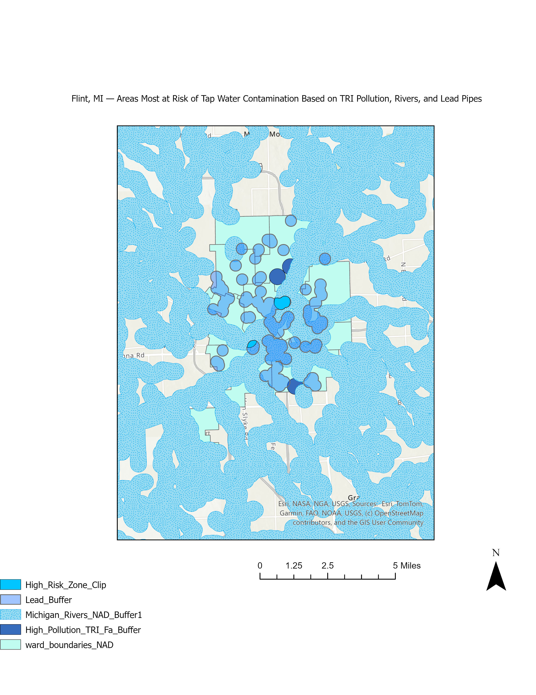

This site showcases three GIS mapping projects developed in GUS 5062. Each map addresses a specific urban or environmental planning problem using spatial analysis techniques.
1. Flint, Michigan Lead Service Line Risk

This map analyzes public health risk in Flint, Michigan by identifying areas most likely to be impacted by lead-contaminated service lines. Using spatial data from suspected lead pipe locations and school locations, buffer zones were created to assess which areas are most vulnerable. The resulting map highlights school-adjacent neighborhoods where children may be at higher risk for lead exposure. These visualizations support targeted remediation and public health interventions in the most affected zones. The analysis also reinforces calls for infrastructure upgrades and government accountability in Flint's water crisis.
The GIS tools/skills that I used to solve this problem:
Buffer analysis around lead service lines and school facilities
Spatial joins to combine infrastructure data with demographic geography
Use of symbology to highlight high-risk zones
Map layout techniques to clarify spatial overlap and urgency
2. Miami Population and Housing Density & Pennsylvania 2020 Election Results by County
This map displays the percent of vacant housing per tract.
This map displays the percent of occupied housing per tract.
This map displays the population density per tract.
This map displays the population density per block.
This map displays the 2020 Pennsylvania Presidential Election Results by County.
This set of maps investigates population density and housing occupancy in Miami at different spatial resolutions, revealing disparities that might otherwise be obscured by aggregated data. Tract-level maps show broad regional trends, while block-level analysis exposes local hotspots of overcrowding or vacancy. These maps demonstrate the importance of geographic scale in urban planning and statistical analysis. By comparing population density with occupied and vacant housing rates, the maps highlight neighborhoods with both high population concentration and underutilized housing — ideal for targeted development or affordable housing efforts. This work reinforces the need to avoid ecological fallacies and the Modifiable Areal Unit Problem (MAUP) in policy decisions.
The GIS tools/skills that I used to solve this problem:
Choropleth mapping of population and housing by census tract and block
Use of multiple spatial resolutions to compare aggregated vs. localized patterns
Understanding and application of MAUP and ecological fallacy concepts
Layer symbology, classification schemes, and export-ready layouts
3. Healthy Food Store Site Selection - Philadelphia
This map displays the empowerment zones, transit access and healthy food locations in Philadelphia.
This map displays the areas where stores must be included in picking a new healthy food store location.
This map dispalys the areas where stores must be exlcuded in picking a new healthy food location.
This map shows the final candidiate areas for healthy food store developments in Philadelphia.
Philadelphia seeks to promote equitable access to healthy food by supporting new retail locations in underserved neighborhoods. This map identifies optimal areas for a new healthy food store based on proximity to public transit, location within designated Empowerment Zones, and distance from existing farmers markets and healthy corner stores. After applying these criteria, the final map isolates candidate zones that meet all spatial requirements. The largest and most viable location lies in West Philadelphia, near regional rail, in a high-priority zone, and far from existing competitors. This map provides a powerful tool for urban planners and city policymakers to allocate resources more effectively and encourage private investment.
The GIS tools/skills that I used to solve this problem:
Buffer analysis (2,000 ft around transit, 1,200 ft exclusion for existing stores)
Union and Intersect tools to isolate overlap between buffers and Empowerment Zones
Erase tool to remove excluded areas
Field Calculator to quantify area and rank candidate zones
Symbology, labeling, and layout design for decision-ready visualization